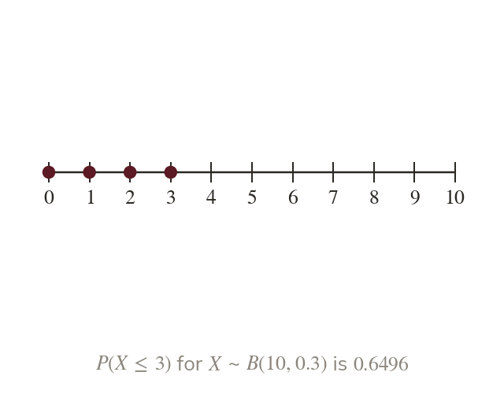
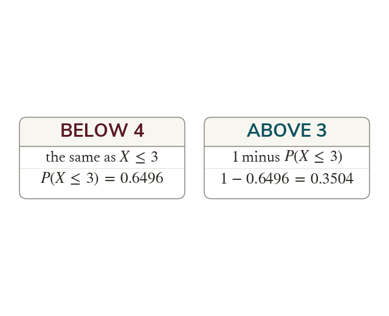
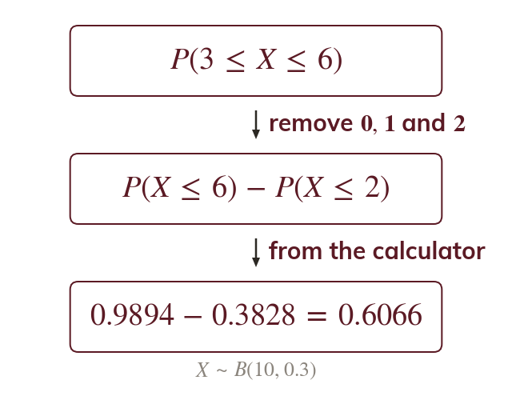
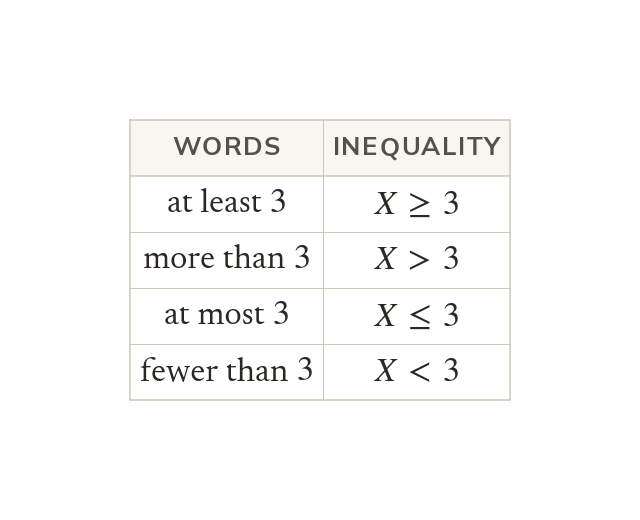
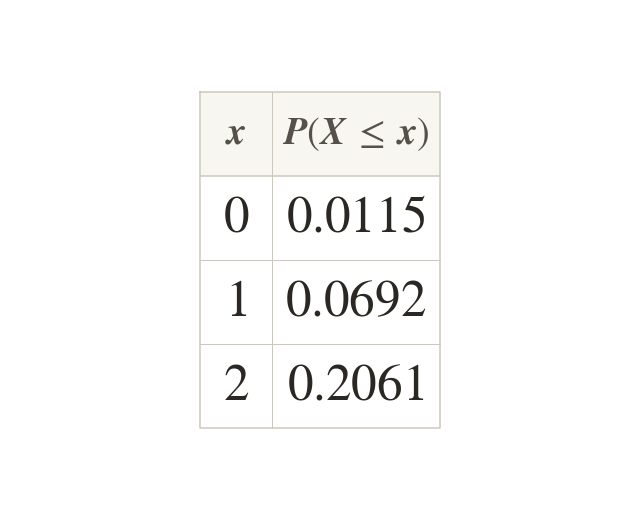
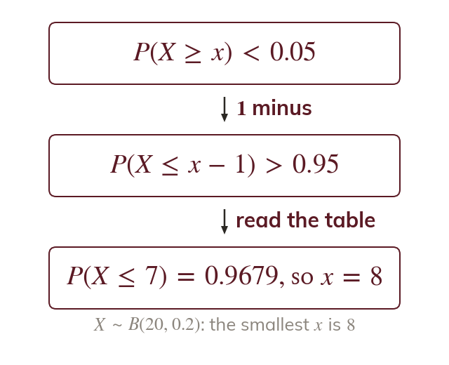

Cumulative probabilities
adds every probability from up to A calculator or the formula booklet tables give it in one step.
Questions such as "at least 3" or "fewer than 8" need many binomial probabilities at once, and cumulative probabilities give them in one step. Reading a cumulative probability to find the largest or smallest value of sets up hypothesis testing in chapter
Work down the page at your own pace. Write every answer in your book first, then click to check it.
Read each card, then follow the worked examples one step at a time.

adds every probability from up to A calculator or the formula booklet tables give it in one step.

takes whole numbers, so is the same as
And is everything else, so

so subtract the cumulative probability just below the lowest value. The values and are taken away.
Pick an answer. If it's wrong, the feedback tells you which mistake it was.
Write the blanks in your book first, then tap each one to check.
Read each card, then follow the worked examples one step at a time.

Define X and state X ~ p), then turn the words into an inequality. "At least" includes the number and "more than" does not.

For the largest with read down the cumulative probabilities until one passes
The value just before it is the answer.

For the smallest with write So look for the first with
Pick an answer. If it's wrong, the feedback tells you which mistake it was.
Write the blanks in your book first, then tap each one to check.
Finished? Next lesson: S7.1 Hypothesis Testing.
For each skill, tap the one that is true for you today. Your Revise pages start with anything you mark Not yet.
Your ratings are saved on this device only.
Log in, then search for a code to practise that skill.